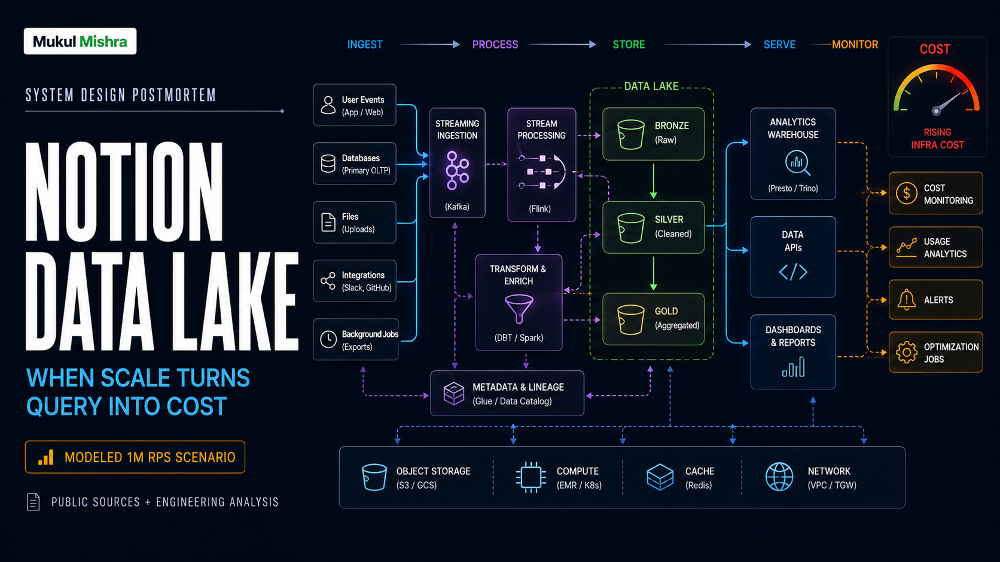

1. The Blank Page Is a Trap
Open Notion and the first thing you see is almost nothing: a cursor, a page title, a few quiet controls. That emptiness is the product's magic. It makes a database look like a notebook, a project plan look like a document, and a document look like a conversation.
It is also a trap for anyone designing the backend. The visible object is a page. The stored object is a tree of blocks. Text, image, heading, checkbox, database row, relation, child page: all are blocks with identity, parentage, ordering, permissions, history, and downstream consequences. A user changes one word and the system may need to update the canonical row, publish a change event, refresh search, rebuild a permission path, refresh a cache, and eventually regenerate an embedding.
The danger is not one spectacular outage. It is a slow, quiet multiplication of work. One edit becomes six workloads. Ten million active users become a stream that never stops. The blank page stays calm while the infrastructure underneath it starts counting.
2. Why Notion Is the Right Billion-Dollar Autopsy
Notion is not a rumor-driven unicorn anymore. In January 2026, the company announced a private employee tender of about $270 million at an $11 billion valuation, with GIC joining Sequoia and Index. In September 2024, co-founder Ivan Zhao announced that Notion had passed 100 million users. The company has also publicly explained the hard parts of its infrastructure rather than hiding behind a glossy uptime number.
That public record gives us something rare: a real architecture to interrogate. Notion says its production database grew from roughly 20 billion blocks in early 2021 to more than 200 billion by 2024. Its PostgreSQL estate moved to 96 physical instances and 480 logical shards. Its data team built a CDC pipeline using Debezium, Kafka, Apache Hudi, Spark, and S3. Its vector-search team says the first architecture reached a cost run rate in the millions of dollars per year before a series of redesigns cut costs by 90 percent over two years.
Those figures are disclosures. The daily bill below is not. Notion does not publish its AWS invoice, traffic histogram, cache hit rate, or model-provider contract. So this is a modeled postmortem: public facts at the edges, explicit assumptions in the middle, and arithmetic that another engineer can challenge.
3. Reconstructing the Machine
Imagine a request entering the system. A browser opens a workspace. An edge layer terminates TLS and routes the request. An application service checks workspace membership and permissions. The block service reads a page tree from one of the database shards. Redis-like caches may absorb hot reads. Images and attachments live in object storage. A WebSocket path carries collaboration updates. The primary database emits a WAL record. CDC turns that record into Kafka traffic. Offline processors land a durable copy in S3. Search, analytics, and AI consume different materialized views.
That is the first important design decision: Notion does not make one database serve every question. The online path needs predictable latency and transactional permissions. The data lake needs cheap, replayable history. Search needs denormalized text. AI needs chunks, embeddings, and access-control filters. Each copy exists because forcing one store to do everything would be worse.
The second decision is the block. A block is a wonderfully product-friendly primitive. It lets the UI compose documents, tables, and workflows without inventing a new storage model for each feature. But block flexibility creates an update-heavy workload. Notion reports that roughly 90 percent of block upserts are updates, not inserts. Warehouses love append-only streams. Notion gives them a constantly edited forest.
The third decision is sharding by tenant-shaped units. By 2023, the system used 96 physical Postgres instances with five logical shards on each, preserving 480 logical shards. This is a practical escape from the single database. It is also a permanent tax: routing, migrations, backups, rebalancing, schema changes, CDC fan-in, and operational tooling all multiply by the number of shards.
optimistic edits
workspace policy
WAL / transactions
fan-out begins here
cheap replay
fast retrieval
hot / warm / cold
infer, stream
The terrifying part is not the arrows. It is what one block mutation fans out into after the user has already stopped typing.
4. The Night the Numbers Stop Adding Up
Let us construct a demanding but plausible production day. Notion has 100 million registered users. We will not pretend all of them are active. Assume 10 million daily active users. Assume each active user spends 20 minutes in the product and generates one application request every ten seconds while engaged. That gives 1.2 billion requests per day, or about 13,900 average requests per second.
Traffic is not flat. If the busiest hour is eight times the daily average, the peak is approximately 111,000 requests per second. We will use 100,000 RPS as a rounded design target. This is not a claim that Notion's internal peak is exactly 100,000 RPS. It is a transparent stress scenario based on the public user count and ordinary interactive-product behavior.
Now the more dangerous number: writes. Suppose each active user produces six block mutations during a session. That is 60 million mutations per day, or 694 per second on average. With the same eight-times peak factor, the mutation path sees roughly 5,600 writes per second. Every mutation can produce a WAL record, a CDC message, a search update, a permission-related invalidation, and a downstream index operation.
AI is a separate fuse. Suppose only one percent of daily active users invoke an AI search or answer each day: 100,000 AI requests. That is a modest 1.16 requests per second average, but the request is not equivalent to a page read. It may retrieve dozens of chunks, apply workspace permissions, rerank candidates, call one or more language models, and stream a response. If the average request consumes 8,000 input tokens and 1,000 output tokens, the token bill can dominate the database bill even at low RPS.
| Modeled workload | Assumption | Result |
|---|---|---|
| Daily active users | 10% of 100M | 10M |
| Interactive API traffic | 1 request / 10 sec / engaged user | 13.9k avg RPS |
| Peak API traffic | 8x average | ~100k RPS |
| Block mutations | 6 per active user / day | 694 avg writes/s |
| Peak mutations | 8x average | ~5.6k writes/s |
| AI requests | 1% of active users / day | 100k / day |
5. The Bill: What Could This Cost?
Here is the uncomfortable part: public user counts do not reveal the invoice. A company can serve huge traffic cheaply with cache hits, or burn cash on a small workload with poor locality. The estimate below is therefore an envelope for the modeled workload, not Notion's reported spend.
Database layer. Notion publicly describes 96 physical instances and 480 logical shards. If we model four database instances per physical host for writer, reader, failover, and operational headroom, that is 384 instances. At a rough $1.40 per hour effective price for a memory-optimized managed PostgreSQL class, compute alone is about $393,000 per month. Storage, I/O, backups, cross-zone transfer, and monitoring can take that to roughly $500,000-$700,000 per month. A smaller instance mix could cut it sharply. A larger high-memory mix could exceed it.
Data lake and batch compute. Two hundred billion blocks are not automatically 200 terabytes. Rows carry metadata, indexes, versions, permissions, and replication overhead. Assume 300 TB of compressed lake data across raw, processed, and historical datasets. S3 storage may be only a few thousand dollars per month, but Spark/EMR reprocessing, Kafka, EKS, shuffle storage, and scheduled backfills are the real bill. A plausible operating envelope is $100,000-$250,000 per month, depending on how often large jobs run and how much spot capacity is used.
Search and vector infrastructure. Notion's own vector-search post says the old architecture reached a cost run rate of millions per year and that the first storage-compute decoupling cut peak cost by 50 percent. Before the later 90 percent reduction, a reasonable modeled range is $150,000-$350,000 per month for vector storage, indexing, embeddings, EMR, and serving. This is exactly where idle capacity becomes a villain: a rarely queried workspace can still occupy index capacity if storage and compute are welded together.
Edge, compute, media, and egress. Add API compute, WebSockets, CDN, object storage requests, image transformations, logs, metrics, backups, and internet egress. Even with aggressive caching, $150,000-$400,000 per month is a defensible range for a globally distributed SaaS at this modeled scale.
AI inference. With 100,000 AI requests per day, 800 million input tokens and 100 million output tokens per day, a blended model price of $2 per million input tokens and $8 per million output tokens produces about $2,400 per day, or $72,000 per month. A premium-model mix can be several times higher. Retrieval, reranking, embedding generation, and retries add more. Model contracts are private, so the honest range is $75,000-$500,000 per month.
| Cost center | Modeled monthly range | Modeled daily range |
|---|---|---|
| Sharded database estate | $500k-$700k | $16.7k-$23.3k |
| Lake, Kafka, batch compute | $100k-$250k | $3.3k-$8.3k |
| Search and vectors | $150k-$350k | $5k-$11.7k |
| Edge, media, egress, observability | $150k-$400k | $5k-$13.3k |
| AI inference and retrieval | $75k-$500k | $2.5k-$16.7k |
| Total infrastructure envelope | $975k-$2.2M | $32.5k-$73.3k |
6. The One Million RPS Test
Here is the clean comparison. This is not a claim about Notion's current traffic. It is a common stress test for the architecture. Assume one million requests per second at the product edge, 1 KB average request size, 2 KB average response size, 30 percent cacheable reads, and three copies for availability. That is 3,000,000 KB per second crossing the system before protocol overhead, or about 259 TB per day.
In the current shape, every uncached request still travels through the API and permission path. State changes fan into the database, WAL, CDC, search, and AI pipelines. Use a deliberately rounded infrastructure rate of $0.000002 per request for the origin path after compute, storage, replication, and operations. The arithmetic is simple: 1,000,000 x 2,592,000 seconds per 30-day month x $0.000002 = $5.18M per month.
My proposed approach does not try to make every request cheaper with a magic database. It removes work. Cache safe reads at the edge, coalesce repeated mutations, keep presence and analytics off the transaction path, tier cold indexes into object storage, and send only 20 percent of the million requests to the origin. At a modeled origin rate of $0.000001 per request, the result is 200,000 x 2,592,000 x $0.000001 = $518,400 per month. Add $250,000 for cache, edge, observability, and failure headroom. The proposed envelope becomes about $768,000 per month.
| At 1M RPS | Current-shaped design | Proposed design |
|---|---|---|
| Origin requests | 1,000,000/s | 200,000/s after 80% cache/coalescing |
| Origin work rate | $0.000002/request | $0.000001/request |
| Core monthly work | $5.18M | $518k |
| Shared edge and safety layer | Included in wider bill | $250k |
| Modeled monthly total | ~$5.18M | ~$768k |
| Difference | ~$4.41M/month, or about 85% lower | |
7. The First Escape: Stop Asking the Warehouse to Pretend
Notion's early ELT setup used Fivetran connectors from Postgres WAL into Snowflake. The design was understandable: get data out quickly, centralize it, and let analysts query it. The problem was shape. There were 480 connectors, update-heavy block data, and expensive transformations such as tree traversal and permission construction.
The redesign moved incremental changes through Debezium and Kafka, landed them in S3 with Apache Hudi, and processed raw data separately from cleaned data. This is the right separation. S3 becomes the durable truth for offline work. Spark can compute when needed. Snowflake and product stores receive only curated data.
Could a team do better? First, use append-friendly event records and compact them into immutable columnar files. Do not rewrite a giant warehouse table for every block edit. Second, partition by workspace and event date, then compact only hot partitions. Third, calculate permission ancestry incrementally when a parent or membership changes, rather than repeatedly traversing every tree during every downstream job. Fourth, use spot capacity for replayable Spark jobs, with on-demand capacity only for the control plane and deadlines.
Notion later said its Spot Balancer reduced Spark compute costs by 60-90 percent across workloads. That is not a theoretical trick. It is the direct consequence of admitting that batch compute is interruptible and designing the scheduler around that fact.
8. The Second Escape: Let Cold Data Go Cold
The vector-search story is even more revealing. The first vector architecture bundled storage and compute into pods. That is fast, familiar, and dangerous. Capacity is purchased for the peak, while most workspaces sleep. A quiet index still consumes a machine because the machine cannot tell the difference between a customer who will return in ten seconds and one who will return next month.
Notion migrated embeddings to a serverless design that decoupled storage from compute. It reported an immediate 50 percent cost reduction from peak usage and several million dollars in annual savings. Later optimizations included a 60 percent reduction in search-engine spend, a 35 percent reduction in EMR compute, and a 70 percent reduction in indexed data volume. It also began moving embeddings from Spark to Ray, anticipating more than 90 percent lower embedding infrastructure cost.
The lesson is not “serverless is always cheaper.” Serverless can be expensive for hot, steady workloads. The lesson is to match cost ownership to access patterns. Keep hot vectors in memory or local SSD. Put warm vectors in a cheaper serving tier. Store cold vectors in object storage and rebuild or hydrate them on demand. Put a budget on every workspace and every index generation. A million rarely used workspaces should not be allowed to masquerade as a million hot applications.
9. What I Would Change Before the Next Billion Blocks
First: make the cost unit visible. Notion has users, seats, and now AI usage, but infrastructure teams need a different ledger: dollars per active workspace, dollars per million block mutations, dollars per indexed block, dollars per AI answer, and dollars per successful search. Without those ratios, an optimization can improve latency while quietly increasing the bill.
Second: introduce workload-aware admission control. A workspace that edits thousands of blocks in a migration should not compete with interactive edits for the same queue. Separate interactive, indexing, export, and AI workloads. Give each a budget, deadline, and degradation policy. If AI indexing is behind, delay embeddings. Do not let it starve page reads.
Third: make permissions incremental. Permission checks are non-negotiable, but recomputing inherited access over a large block tree is expensive. Maintain a compact workspace authorization snapshot and version it. On a membership or parent change, enqueue affected subtrees. On reads, validate against a versioned boundary. The system should pay for the changed branch, not the entire forest.
Fourth: compress the mutation stream earlier. If a user types ten characters, the system should not necessarily persist ten full downstream indexing operations. Coalesce edits over a short window, preserve an audit-quality event log, and publish one searchable document update. The WebSocket path can remain responsive while durable secondary systems receive a compacted representation.
Fifth: route AI by difficulty. Notion has described routing tasks by quality, latency, and cost. Push that further: classify requests before retrieval, use a small model for intent and query rewriting, retrieve only the minimum context, and escalate to a premium model only when confidence is low. Cache stable workspace summaries. Never send the entire page tree to a large model because the permission system made retrieval inconvenient.
Sixth: reserve what is boring and spot what is disposable. The always-on database and gateway deserve commitments, reserved capacity, and careful rightsizing. Backfills, re-embeddings, compaction, and historical replays should use spot fleets and resumable checkpoints. The largest savings often come from refusing to pay on-demand prices for work that can wait.
My conservative target would be a 35-55 percent reduction against the modeled $975k-$2.2M monthly envelope. That could mean 15-25 percent from database rightsizing and commitments, 10-20 percent from lake and batch scheduling, 10-25 percent from vector tiering and index reduction, and 5-15 percent from AI routing and retrieval. These ranges overlap. They are not additive promises. In a mature system, savings are constrained by reliability, residency, tail latency, and engineering time.
The order matters. Do not start by rewriting the glamorous part. Start with the meter, then remove duplicate work, then separate hot from cold, then negotiate commitment discounts. Teams love buying a new database to solve a query problem caused by missing indexes. It is a beautiful industry tradition, right up there with solving latency by adding retries.
10. The Verdict
Notion's architecture is impressive precisely where it is vulnerable. The block model made product composition absurdly fast. The same model made every new feature another consumer of a mutable, permissioned, update-heavy graph. The company responded the right way: shard the online database, separate offline data from online traffic, replace warehouse rewrites with CDC and lake storage, decouple vector storage from compute, and use interruptible capacity for interruptible work.
The postmortem is not “Notion spent too much.” A billion-dollar product serving a hundred million people is supposed to have a large bill. The postmortem is that cost behaves like a distributed systems failure: it emerges from fan-out, retries, idle capacity, duplicated representations, and the distance between the event that caused work and the feature that consumed it.
The next incident will not arrive with a red dashboard. It may arrive as a new AI feature that converts every page edit into an embedding, a new enterprise customer with a ten-million-block workspace, or a reindex job that quietly consumes the same capacity as the API. The cursor will still blink on a blank page. The user will see simplicity.
Behind it, 480 shards will wait. Kafka will begin to fill. A vector index will wake from cold storage. Somewhere, an engineer will look at the graph and ask the only question that matters:
What did this one innocent block just make the system do?
11. Three Questions Engineers Actually Ask
Is Notion using a data lake because PostgreSQL failed?
No. PostgreSQL remained the transactional source for online product behavior. The data lake exists because analytics, search, and AI have different latency and cost requirements. The mistake would be making the primary database answer every offline question, not using PostgreSQL at all.
Is 100,000 RPS Notion's confirmed peak?
No. It is the peak in this article's explicit workload model: 100 million public users, 10 million daily active users, 20 minutes of engagement, one request every ten seconds, and an eight-times peak multiplier. Replace those assumptions with your telemetry and the result changes. That is the point.
What is the first optimization to copy?
Copy the discipline, not a vendor list. Measure the fan-out from one mutation, assign costs to each downstream consumer, and make replayable work interruptible. Notion's Debezium-to-Kafka-to-S3 path is useful because it separates durability, serving, and computation. Copying Kafka into a system with no event volume is just buying yourself a small distributed-systems-themed aquarium.
Sources and Method
Public facts used here come primarily from Notion's engineering and company posts. The workload and cost model is my own estimate using rounded US cloud-market assumptions. It is not an assertion of Notion's confidential spend. Cloud prices, model rates, traffic, and architecture change over time.